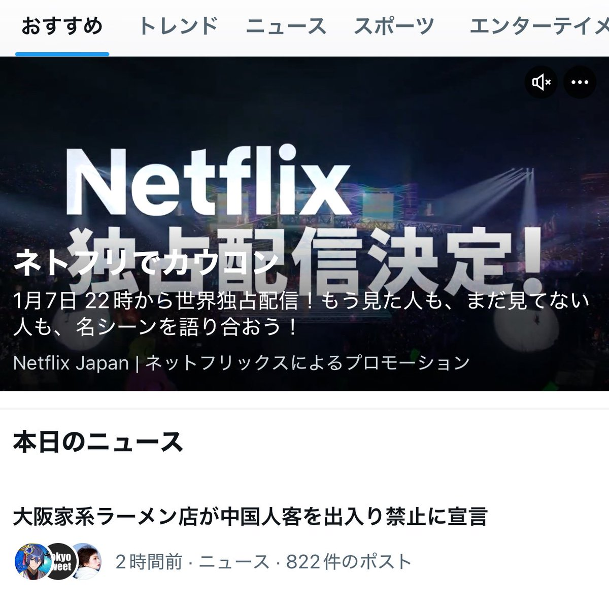
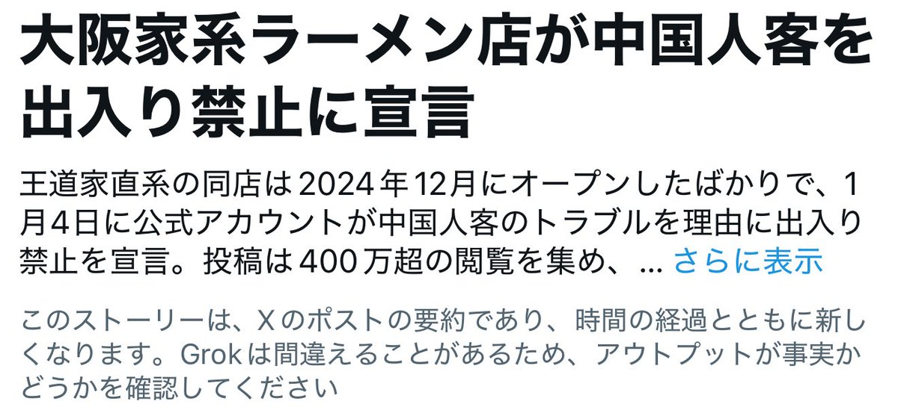
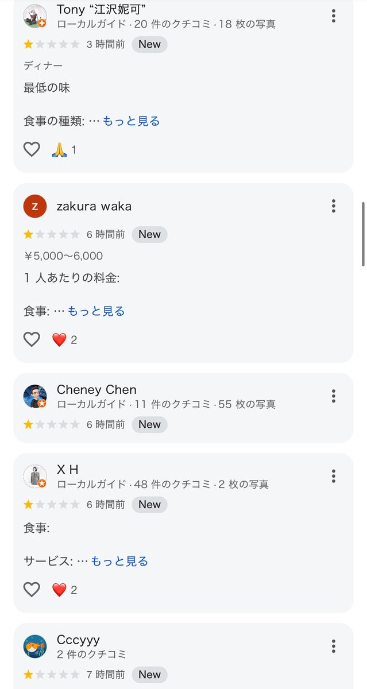
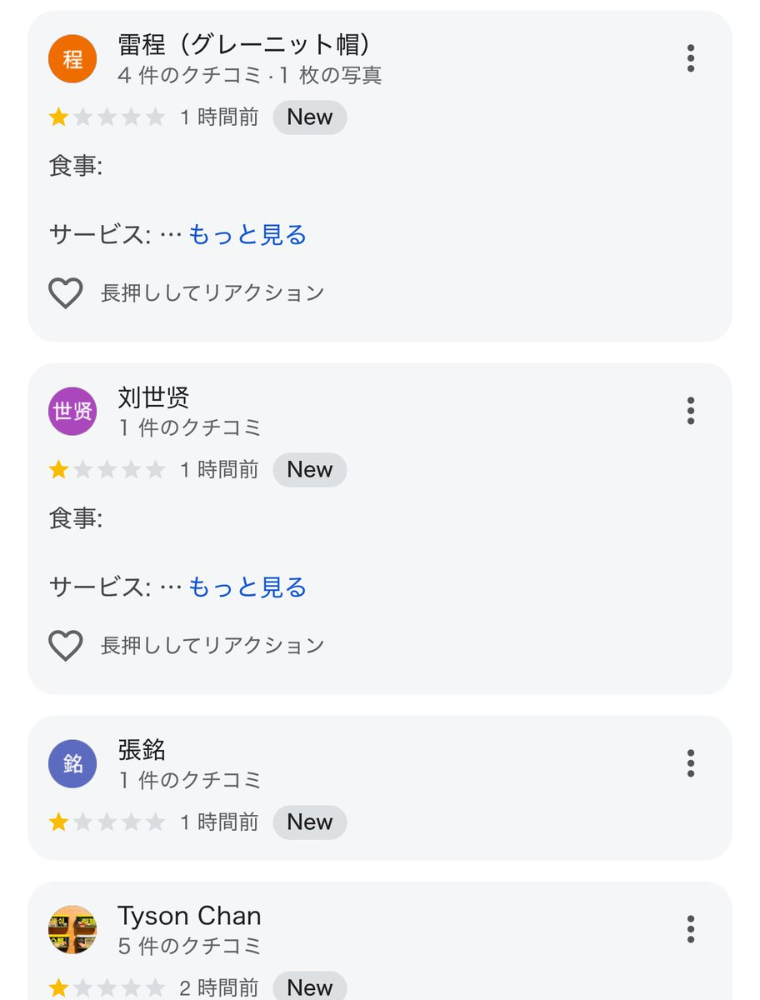

Als in Deutschland ansässiger Bürger und Mitglied der niederländischen PvdA erkläre ich der Bundesrepublik Deutschland sowie D66 und PVV, dass ich Ihre Dienste nicht in Anspruch nehmen darf.Bis ihr die Speisekarte überarbeitet, die uns Europäern den doppelten Preis berechnet.



